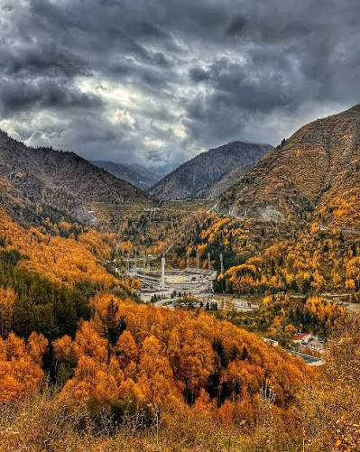

Kazakhstan | a land of endless steppes, alpine lakes and the Altai Mountains
Kazakhstan is a vast country in Central Asia, where enormous mountain ranges, deep canyons, turquoise lakes and seemingly endless grasslands create an incredible variety of landscapes. In the southeast, the Tian Shan mountains rise above Almaty, while further east, near the Russian border, the Altai Mountains offer dense forests, glaciers, remote valleys and some of the country's most untouched wilderness.
Among its most impressive sights are Charyn Canyon – a spectacular landscape of red sandstone cliffs often compared to the Grand Canyon; Kolsai and Kaindy Lakes – alpine lakes surrounded by forest-covered mountains, with Kaindy famous for the submerged tree trunks rising from its turquoise waters; and the Katon-Karagay region – a remote mountain wilderness of rivers, forests and snow-covered peaks. Around Ridder, the Western Altai Nature Reserve protects remarkable taiga forests and mountain ecosystems, while Bukhtarma Reservoir offers vast blue waters surrounded by green hills.

Itinerary
Day 1 – Arrival in Almaty
Arrive at Almaty International Airport and transfer to your hotel in the city. Spend the afternoon exploring the centre, visiting Panfilov Park, Zenkov Cathedral and the lively Green Bazaar. Enjoy views of the snow-covered Tian Shan mountains rising behind the city. Overnight in a hotel in Almaty.
Day 2 – Medeu and Shymbulak
Travel into the mountains south of Almaty to visit Medeu, a famous high-altitude ice-skating complex surrounded by steep mountain slopes. Continue by cable car towards Shymbulak, where alpine meadows, rocky peaks and spectacular mountain views create an excellent setting for walking and photography. Return to Almaty for the night.
Day 3 – Journey to Altyn-Emel National Park
Leave Almaty and travel towards Basshi, the small village that serves as the main base for exploring Altyn-Emel National Park. The landscape gradually changes from green mountain foothills to dry open plains and desert-like terrain. Arrive in Basshi in the afternoon and settle into a local guesthouse. Overnight in Basshi.
Day 4 – The Singing Dune and Aktau Mountains
Spend the day exploring Altyn-Emel National Park. Visit the Singing Dune, an enormous sand dune that can produce a deep humming sound under certain windy conditions. Continue towards the Aktau Mountains, famous for their unusual white, red and orange sedimentary formations, which resemble an enormous natural painting. Return to Basshi for another night.
Day 5 – Return to Almaty
Begin the journey back towards Almaty, passing through the vast open landscapes of southeastern Kazakhstan. Enjoy the changing scenery along the way and spend the evening relaxing in the city. Overnight in Almaty.
Day 6 – Charyn Canyon and Saty
Leave Almaty early and travel east towards Charyn Canyon, approximately 200 kilometres away. Explore the famous Valley of Castles, where enormous red sandstone formations rise above the canyon floor. Continue towards Saty, a small mountain village surrounded by forests and alpine scenery. Overnight in a local guesthouse in Saty.
Day 7 – Kolsai Lakes
Explore Kolsai Lakes National Park, famous for its three alpine lakes surrounded by dense spruce forests and steep mountain slopes. Spend the day walking around Lower Kolsai Lake, enjoying the clear mountain water and peaceful surroundings. More experienced hikers can explore longer trails, depending on weather and access conditions. Overnight in Saty.
Day 8 – Kaindy Lake
Travel to Kaindy Lake, one of Kazakhstan's most unusual natural attractions. The lake was formed following an earthquake and landslide in 1911, which flooded a forest of spruce trees. Their pale trunks still rise out of the turquoise water, creating an extraordinary underwater forest landscape. Explore the surrounding forest and viewpoints before returning to Saty for the night.
Day 9 – Return to Almaty
Leave Saty and travel back towards Almaty, passing through the mountain valleys and open countryside of southeastern Kazakhstan. Arrive in the city during the afternoon or evening and prepare for the next part of the journey. Overnight in Almaty.
Day 10 – Flight to Oskemen
Transfer to Almaty International Airport and take a domestic flight to Oskemen, also known as Ust-Kamenogorsk. The flight takes approximately 1 hour and 15 minutes. After arriving, check into a hotel and spend the afternoon exploring the city and its surroundings, including the Irtysh River waterfront. Oskemen is an important gateway to the Kazakh Altai. Overnight in Oskemen.
Day 11 – Journey to Ridder
Leave Oskemen and travel approximately 2–3 hours towards Ridder, a former mining town surrounded by the forests and mountains of the Altai. The landscape gradually becomes greener and more mountainous, with dense coniferous forests and river valleys. Spend the afternoon exploring the town and its surroundings. Overnight in a local guesthouse in Ridder.
Day 12 – West Altai Nature Reserve
Spend the day exploring the West Altai State Nature Reserve, a protected landscape of dense cedar, fir and spruce forests, alpine meadows and dramatic mountain formations. Follow an organised excursion route through the reserve, stopping at scenic viewpoints and learning about its unique ecosystems. Access must be arranged with the reserve in advance. Return to Ridder for the night.
Day 13 – The mountains and forests around Ridder
Explore more of the landscapes surrounding Ridder, with opportunities for guided walks through the mountain forests and along nearby rivers. Discover the quiet wilderness of the Western Altai, where wildlife such as moose, lynx and brown bears inhabit the forests. Enjoy the scenery and take time to experience the peaceful atmosphere of this remote region. Overnight in Ridder.
Day 14 – Journey to Katon-Karagay
Begin an early journey towards Katon-Karagay National Park, travelling through the spectacular landscapes of eastern Kazakhstan. The route passes mountain valleys, forested slopes and the vast Bukhtarma Reservoir, one of the country's largest bodies of water. Continue towards Katon-Karagay village, where you will stay in a local guesthouse. This is a long driving day, so allow plenty of time.
Day 15 – Berel and the Kazakh Altai
Explore the Berel archaeological complex, famous for its ancient burial mounds where frozen ground helped preserve remarkable remains from early nomadic cultures. Afterwards, discover the surrounding landscapes of Katon-Karagay, with its mountain meadows, rivers and forests. Enjoy the views of the distant Altai peaks before returning to your guesthouse for another night.
Day 16 – Return to Oskemen
Start the return journey towards Oskemen, following the mountain roads and river valleys of East Kazakhstan. Make occasional stops to enjoy the scenery and photograph the changing landscapes. Since the drive takes much of the day, plan to arrive in Oskemen in the evening. Overnight in a hotel in the city.
Day 17 – Departure
Transfer to Oskemen Airport and catch a domestic flight to Almaty, Astana or another connecting airport for your international journey home. Alternatively, travellers can arrange their international departure directly from a suitable connecting city.